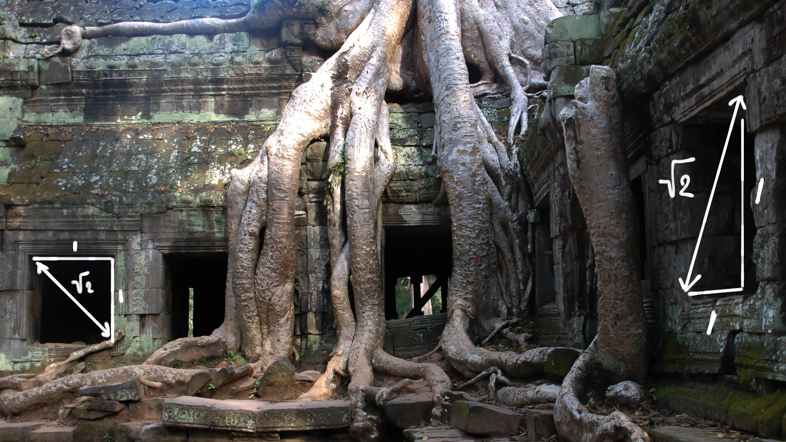
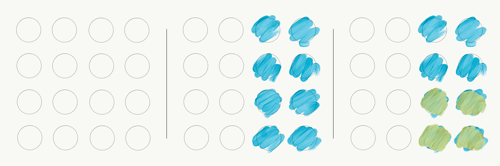
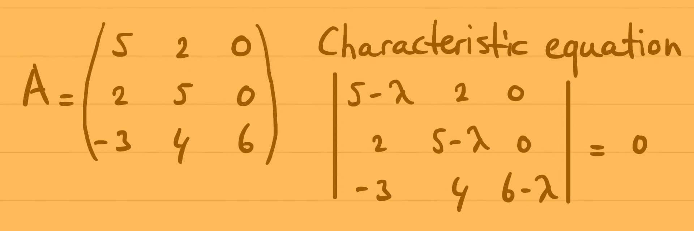
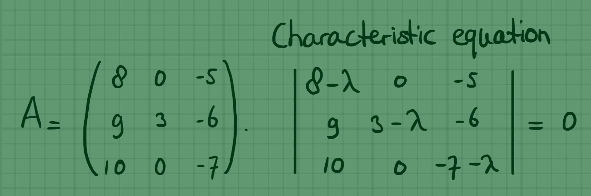
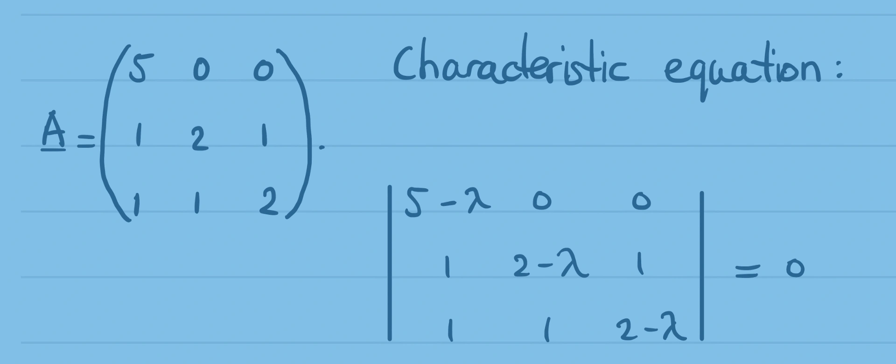

Articles and derivations in mathematics.
What mathematicians and physicists actually mean by dimensions
An accessible introduction to the complex plane, imaginary numbers, and their fundamental role in physics
How prime factorisation and roots of unity determine whether any given number of test tubes can be evenly balanced in a laboratory centrifuge
Why one of the simplest mathematical rules remains one of the hardest to prove

A step-by-step classic proof by contradiction showing why the square root of 2 cannot be expressed as a ratio of two integers
Deriving an analytical expression for the normal force on a sliding mass over a cylinder, eliminating second derivatives via integration
A complete step-by-step derivation of the volume of a 3-ball using spherical coordinates, infinitesimal volume elements, and triple integration
Celebrating Pi Day, Albert Einstein’s birthday, and the surprising appearances of pi in general relativity, number theory, and colliding blocks
Why mirrors do not reverse left and right, and how geometric reflection differs fundamentally from rotational transformation
Simple algebraic proofs demonstrating why subtracting a negative yields a positive and why multiplying two negatives results in a positive

An intuitive explanation of independent probabilities and why combined outcomes correspond to taking a fraction of a fraction
Why the birthday paradox means you only need 23 people for an even chance of a shared birthday, and 50 people for a 97% certainty

A step-by-step undergraduate tutorial on calculating real eigenvalues and corresponding eigenvectors for a 3x3 matrix

A step-by-step undergraduate tutorial on finding real eigenvalues and corresponding eigenvectors for a 3x3 matrix with algebraic multiplicity

A step-by-step undergraduate tutorial on computing real eigenvalues and eigenvectors for a triangular-leaning 3x3 matrix